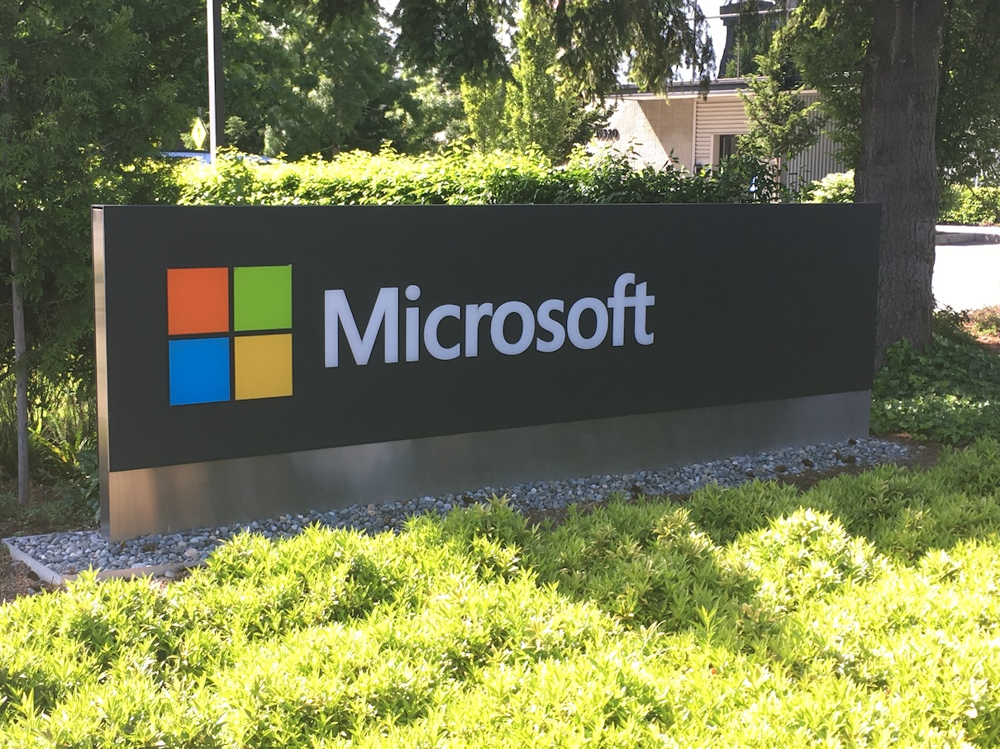
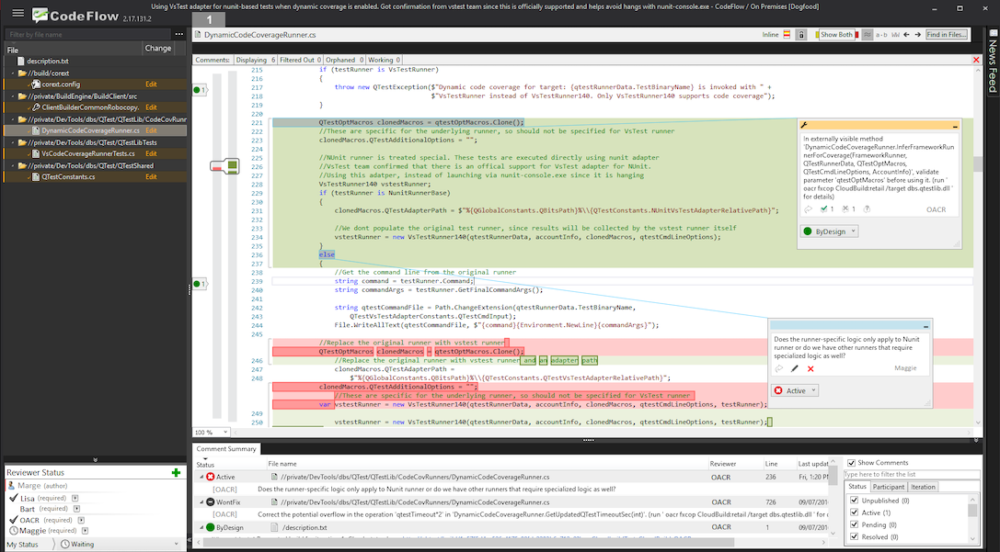
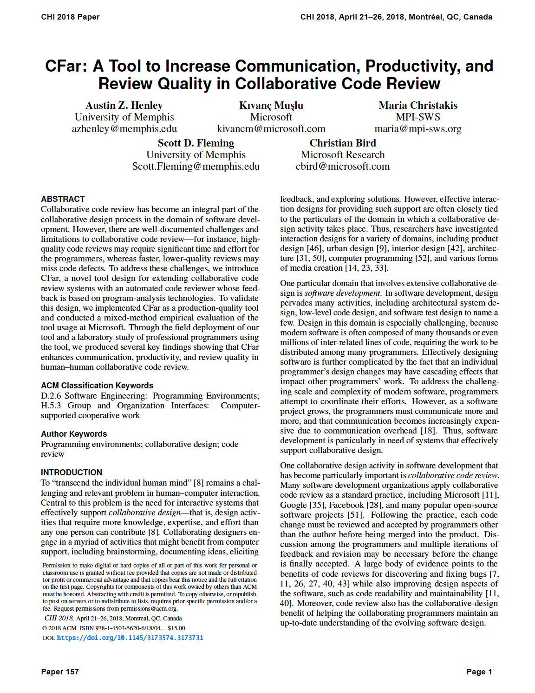

Assistant Professor
See the discussion of this post on Hacker News.
It is well-known in user research that if you ask a user if they want a new feature, that they will often scream, "YES". Why wouldn't someone want more features after all? Although they may not actually use it. And you may not know that until after it is released.
This is a story of a time I built exactly what developers told me they wanted, and then they didn't use it. But this time it isn't that simple. I had a lot of evidence showing the need for these features. So why weren't they using it?!
It had been my dream to work at Microsoft one day. I first got into programming two decades ago using Visual Studio. I started with Visual Basic 6, then moved to Visual C++ 6, and then Visual C# 2008. At one of my early software jobs, my manager asked me during my performance review meeting: "where would you rather work than here?" I said Microsoft.
During grad school, I saw that Microsoft was publishing a lot of the great papers in my area. It even seemed as though all of the famed professors spent at least a summer there as an intern. I didn't know how to get into their realm though. I had a few conversations with Microsoft researchers at conferences but I still wasn't on their radar.
So one night, during a rebellious fit, I sent cold emails to two groups I wanted to work with. I had my first video interview a few days later and a few more the following week.
I got a research internship at Microsoft.
The position was a hybrid role working with researchers and a dev tools team. Specifically, working on an internal tool and service used to conduct code reviews within the company. Something like 30,000 people used the tool each week.
I initially spent a lot of time understanding the code review process. I shadowed developers as they performed code reviews, I analyzed telemetry data from the code reviewing web service, I recorded developers' screens as they performed code reviews, and I interviewed developers about code reviews. In fact, I even did a literature review of research papers about code reviews before I started the internship so that I could show up the first day ready to go.
Now I just needed to build a tool to solve the problem that we were confident they had.
The goal was to create an automated code reviewer that provides program analysis feedback in code reviews. That way the entire team can see the feedback, instead of only the author of the code changes, and they can spend their time on design discussions, instead of superficial nitpicking. Additionally, it would streamline the process of requesting a build, running the program analyzers, and running tests, which can take many hours, and for some teams this is all done very late in the review process. The automated reviewer would stay involved throughout the entire review process and update the feedback automatically.
Building the initial prototype took considerably longer than we had originally expected. I was supposed to use some existing infrastructure as a foundation and just make a few tweaks for our use case. It would take two weeks max, or so we thought. Turns out there were a few hiccups: everyone involved in that project we wanted to use had left the company, we had no idea how to build the source code, it had something like 500,000 lines of code, and the one person we found that knew anything about the project was 13 hours ahead and stopped replying to our emails.
Hmmm. Guess I am rewriting what we need from scratch. The weeks of my internship are counting down already.
A month later, I demo'ed a prototype of our automated code reviewer to a few managers and developers. They gave positive feedback and agreed to let us pilot the tool on their teams. I wrote up a short tutorial on how to use it and sent it out to the teams. I spent the weekend making bug fixes and setting it up for "real world" use.
We deployed our tool.
Almost no one used it. The handful that did use it, used it once or twice and barely interacted with it. After a few days, zero people were using it.
Why did they tell me they wanted these features?!?!
I felt defeated. My summer was winding down fast. The project had already hit a dozen different snags along the way. I was ready to throw in the towel. But at least I got to put Microsoft on my resume now, right?
I took the weekend off. I tried not to think about it.
Then the motivation hit. Just like that night I sent the cold emails to get the internship in the first place. So I got to the office at 6am on Monday (moving from Central Time Zone to the west coast has its advantages) and started sketching out a plan. When my mentors arrived, I told them to give me the week. I was going to figure this out.
This wasn't the users' fault. They didn't lie to me. They did have this problem and they did want a solution. I was just missing something. All I had to do was go back to observing them. The answer was out there!
I conducted a small lab study to again see how people were conducting code reviews. But I also asked them to do a code review using my tool. I gave them almost no instructions on how to use it. I watched step by step.
I emailed the few developers that had originally used my tool to try to start a conversation about their thoughts on the tool.
A problem became evident. I had been looking at the wrong place the entire time! It wasn't even about the features that our tool provided. It was how the tool fits into their workflow. Or in this case, how the tool required a minor, but explicit change to their workflow just to get started. Many of the developers didn't even know our tool existed. I had never thought this would be an issue. We had never discussed it before. It was just assumed... I mean, how else would they use our tool?
After brainstorming with my mentors, they were quick to come up with a solution. We shift a portion of the tool from being a desktop application to a web service that listens for code reviews, then it automatically initiates our features without any explicit command. That way the developers' workflow is entirely unchanged! Oh, the power of default options.
We were very short on time, but it was a fairly small task to go and create a web service to do this. There was an existing API that took care of the hard parts.
This time we wanted to be more careful with the deployment. The developers might give us a second shot, but I doubt they'd give us a third. Our plan was to deploy to a small team that was located in the same building as us and get feedback from them quickly. We made it clear to them that they were a high priority to us and that we were all ears to what they had to say about the tool.
"Too many useless comments."
They used it. But it frustrated them. It was overloading them with information and getting in their way. I received an angry email or two. There was no way we could have seen this coming... based on the use cases we were testing during development. But had we been closer to our customers, we would have. I should have seen this coming. Another lesson learned.
We put in some hard restrictions into our tool so that it couldn't bombard any more code reviews with information. We filtered out analysis warnings that were likely to be less relevant or low priority, aggregated reoccurring warnings, and set a maximum limit to the number of warnings that would be displayed. We also added status updates from the automated reviewer, so that users would know exactly what state the system is in. In hindsight, everything the developers wanted was completely reasonable and logical. Obvious even.
It was time to re-deploy to all of the teams that had initially agreed to use our tool.
We quadruple checked that everything was ready. And quadruple checked again. We sent out an email to the managers to tell them that we would be turning on our tool for all of their code reviews by default.
I clicked a button to deploy it.
There was just over a week left of my internship. There was no time to pivot if things went south again. I really only had time to fix minor bugs, collect more qualitative data, and go around presenting my project to more teams. The plan was to collect usage data for a few months after I'm back at university, then submit a paper somewhere.
Fingers crossed the tool helps the developers with their code reviews over a long period of time.
Fast forward to a few months later, we hit another problem. Analyzing the usage data isn't as straight forward as we had hoped. We made some false assumptions about the data being logged. And since I'm no longer an employee of Microsoft, I'm having to write database queries over email and wait until someone has free time to run them and send me back the anonymized, aggregate results.
People did use it! We deployed it to 98 software engineers across three teams for 15 weeks. It was used for 354 code reviews by 41 different authors and 883 unique reviewers. It posted 149 analysis comments into the code reviews (plus status updates from the build and testing frameworks). It would have posted considerably more comments, but specific analysis warnings can be suppressed by a team.
"Having some comments helped start the conversations that might be missed until last minute, so their addition is a net positive."
By analyzing the usage data and emailing out a survey, we found evidence that our tool increased communication, productivity, and review quality. Users reported overwhelming praise, along with feature requests and scenarios that could be improved.
In the end, we published a fantastic paper at a top conference. Not only that, but several teams at Microsoft reached out to me to understand the design rationale of the tool since they wanted to re-create it for their own organizations.
Writing this story makes all of the problems and solutions sound so obvious. Hindsight...
Let's review a few of the lessons I learned:
Thank you Maria and Kivanc for the fabulous summer!
There are a few books I'd recommend to my former self:
If you found this story interesting, read another internship story of mine: Building solutions to problems that no one knows exist yet.